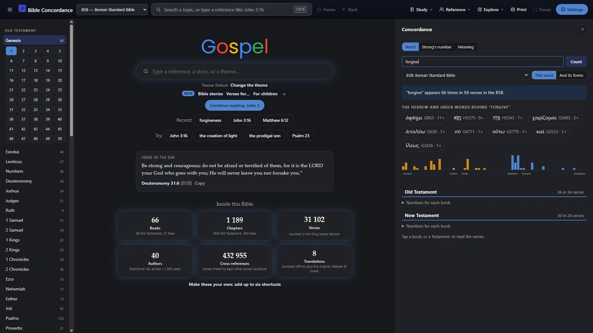

Home › Strong's concordance
Free Strong's concordance and Hebrew and Greek word study
Tap any word to see the Hebrew or Greek behind it, its Strong's number, every meaning it has and every verse that uses it. Free and offline, on Windows and Android.
The word behind the word
A Strong's number is a number given to each Hebrew and Greek word in the Bible, so that you can see which original word stands behind an English one. In Bible Concordance, a Bible with Strong's numbers lets you tap a word and open its page.
- All its meanings, drawn as a ring sized by how many verses use each one, with each meaning explained in everyday English.
- Every verse that uses the word, with the word marked, and the other words that mean something close.
- The words behind an English word: type "forgive" and see the Hebrew and Greek words behind it, with counts.
- Concordance on Windows: count a word in every book, or search by meaning (love, affection, compassion).
- Interlinear on Windows: a chapter beside the Greek, each word with its Strong's number, meaning and grammar.
- Hear it said on Windows: a speaker beside each Hebrew and Greek word.
- Offline: the dictionaries and the original texts are in the app, so it works with no internet.


Where the meanings come from
The meanings come from the United Bible Societies' dictionaries of Biblical Hebrew and Greek and from SIL's Semantic Domains, both shared under an open licence and credited on the credits page. Strong's numbers come with the Bibles that carry them (BSB, KJV, ASV and WEB).
Questions
What is a Strong's number?
A number (H for Hebrew, G for Greek) that identifies one original word, from James Strong's concordance. It lets you look up the same word wherever it appears.
Does it work offline?
Yes. The Strong's dictionaries and original texts are inside the app.
Is it free?
Yes, free, with no account and no adverts.
Windows or Android?
Both have word study. Windows adds the concordance, the interlinear, searching the original languages and a speaker beside each word.
Try it, it is free
No account, no adverts, and it works without the internet.
Download for Windows or Android